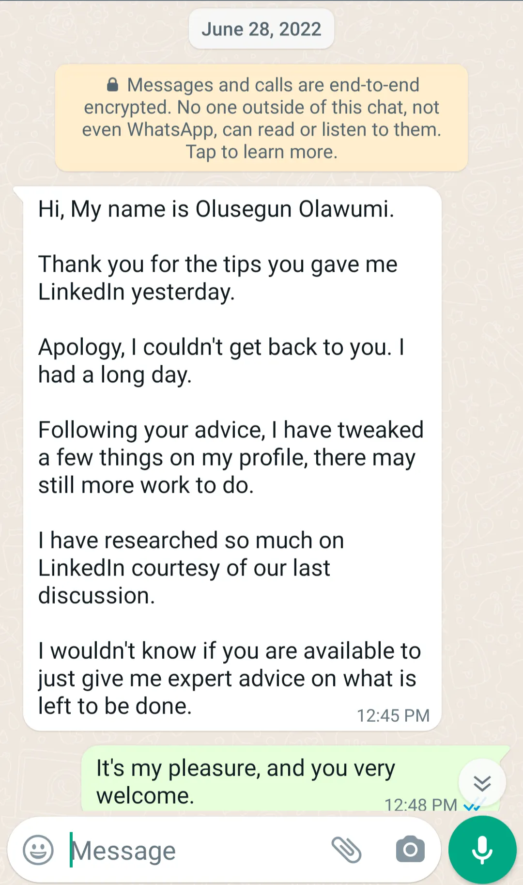
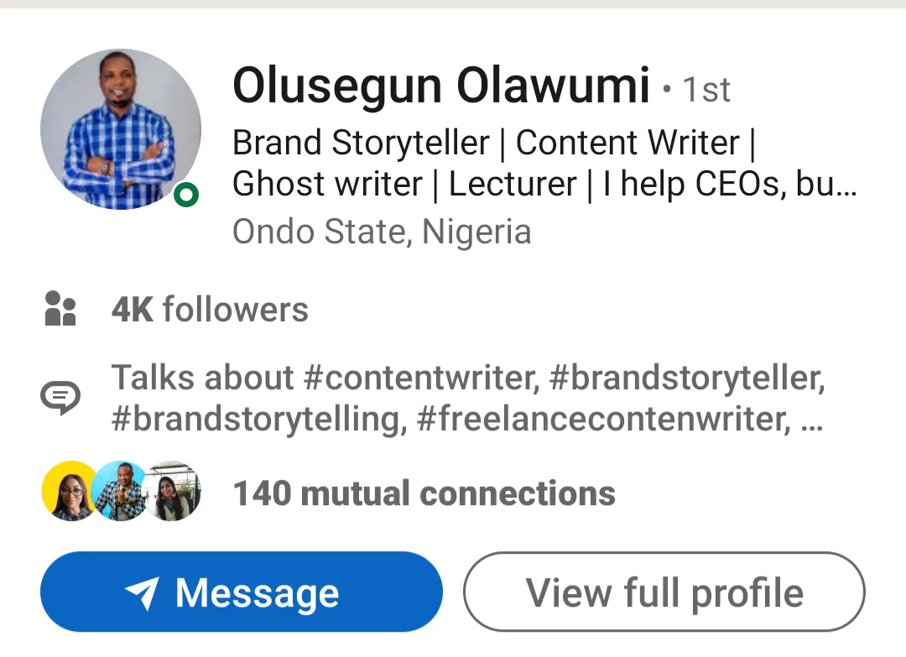
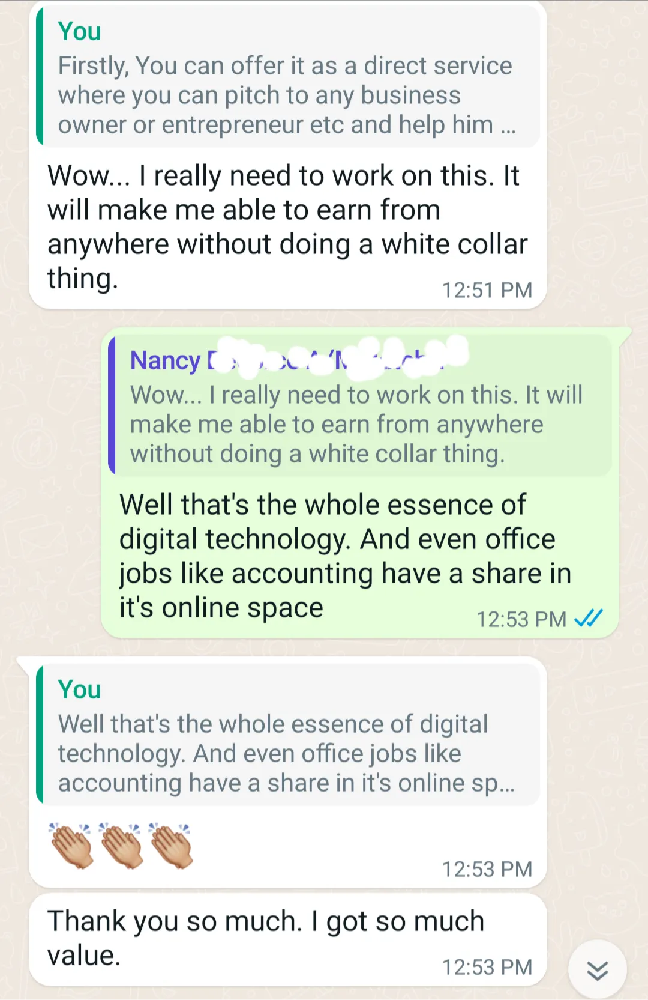
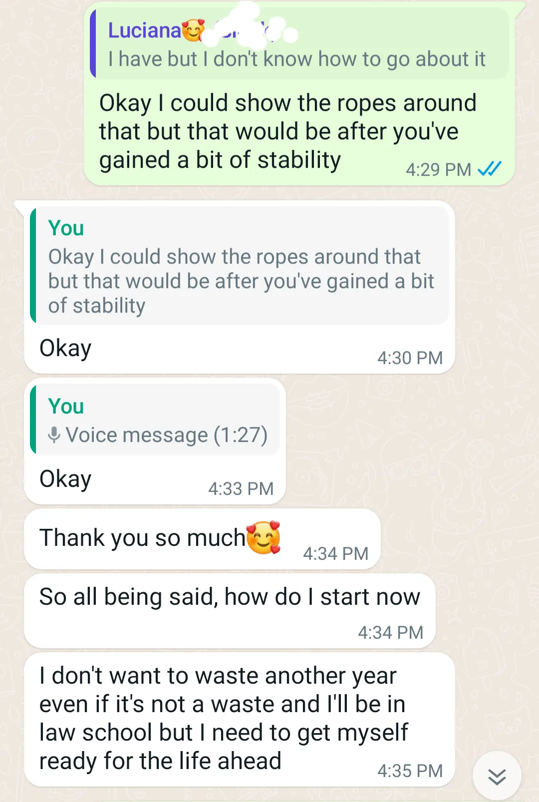
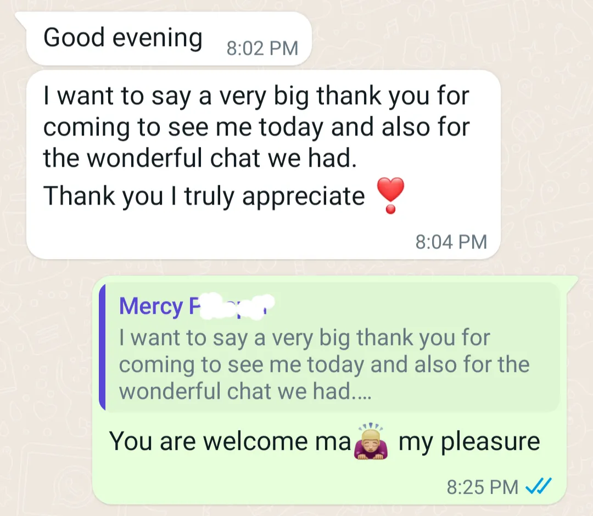

DWCP Foundation Diagnostic
A personalised diagnostic that tells you exactly which digital skill fits your specific wiring, your degree, and your situation, telling you what to do about it in the next 90 days.
Start My Diagnostic : ₦10,000The Real Problem
You know digital income is real. You have seen other Nigerians building it, some from the same city, some with less impressive CVs than yours. You are not confused about whether it works. You are confused about which part of it works for you.
That confusion is the reason a graphic design course sits unfinished on your laptop. It is the reason you announced you were going into content creation in January and quietly dropped it by March. It is the reason you have spent money on at least one thing that produced nothing, not because you are lazy, but because the lane did not fit.
Every course, every guru, every YouTube video sells you on what worked for them. Nobody has sat down with your specific degree, your specific personality, your specific available time and money, and said: this is the lane, this is why, and this is what you do in the next 90 days. That is what this diagnostic does.
Start Here (Free)
Most people who get the most from this diagnostic have already identified that something specific is off: their degree, their desired direction, their developed skills, or what the economy rewards. The free quiz maps all five for you and tells you exactly where the gap is sitting before you invest in the full diagnostic.
Take the Free Alignment Quiz →12 questions · 4 minutes · Instant results · No email required
Before You Read Further
What the Diagnostic Is
A diagnostic is not a prescription. A prescription tells you what to take. A diagnostic tells you what is actually happening, and the prescription follows naturally from the truth.
After payment, you receive a link to the DWCP Intake Advisor, a GPT-powered conversation that interviews you across 12 areas: your degree, your cognitive wiring, your previous attempts, your money behaviour, your available time, your actual environment, and where you want to be in three years. The conversation adapts to what you reveal as you go. It takes 30 to 50 minutes if you are honest, and you can complete it across two sessions.
When you finish, the GPT compiles your answers into a structured document. Sochima Akujuo feeds that into the DWCP analytical framework. Seventy-two hours later, you receive a full written report built specifically for your situation. Then you get on a 30-minute WhatsApp call. You have already read the report, you arrive with specific questions, and Sochima walks you through what it means for your next move.
Before and After
These are not testimonials written for a page. These are real WhatsApp conversations. Real people who came without a clear direction and left with one.
Olusegun O. · Ondo State, Nigeria
He reached out after Sochima gave him LinkedIn tips. He had been researching, tweaking his profile, reading for days. Still did not have a clear direction. One conversation later, he had a lane. The screenshot on the right is his LinkedIn today.
Brand Storyteller. Content Writer. Ghost writer. Lecturer. 4,000 followers. That is not a course result. That is what happens when someone finally shows you which direction is yours.
Before the conversation

His LinkedIn today


Nancy
"Wow... I really need to work on this. It will make me able to earn from anywhere without doing a white collar thing."
Not a course result. One conversation that showed her what was already in her background.

Luciana
"I don't want to waste another year. I'll be in law school but I need to get myself ready for the life ahead."
Law school ahead. Career to build at the same time. She did not need more content. She needed one clear direction for her specific situation.

Mercy F.
"I want to say a very big thank you for coming to see me today and also for the wonderful chat we had. Thank you, I truly appreciate."
She sent this the same evening the conversation ended. Not after a programme. Not after a course. After one honest session about her specific situation.
What You Get
Produced from your diagnostic conversation and reviewed by Sochima before delivery. Not a template with your name inserted. Every section references specific answers from your conversation.
Section 0: The Wealth Mechanics
The five currencies of wealth, the platform extraction model, and why no one is born poor, only misaligned. The economic frame your report is built on.
Section 1: Where You Actually Are
Your precise position on the Worker-to-Wealth Spectrum. Which Logic you are in and the single thing blocking the next one.
Section 2: Your Wealth Conditioning
The money beliefs inherited from family and community that are already shaping your decisions, and the pattern most likely to derail your first 90 days.
Section 3: Your Skill Options
Three to five viable income lanes built from your profile. Income ceilings at 6, 12, and 36 months. The high-ticket version of your lane. Specific AI tools that multiply your output. Real companies to contact by name.
Section 4: Your Strengths Amplified
Three to four specific strengths from your conversation, not generic. For each: one specific action that converts it into a commercial asset.
Section 5: Your Weakness Map
Specific weaknesses with lane-specific consequences. For each: a real book, a specific drill, a relevant community. You leave with a reading list and a practice list.
Section 6: Degree Leverage vs. Moat
Whether your degree should be front-facing or held as an invisible quality advantage. The exact words for your LinkedIn headline and pitch. In 2026, a clinical, legal, or technical degree is a moat against AI hallucination.
Section 7: Your MEAT Audit
How you are deploying your four currencies: Money, Energy, Attention, Time. The primary leak. One specific, executable reallocation move for this week.
Section 8: The Leverage You're Not Using
The highest-value element of your backstory your current path is completely wasting. How it raises your pricing power by five to ten times versus a generic entrant.
Section 9: Your Credibility Gap
The gap between what you can do and what the market currently sees. The single highest-leverage action to close it in the next 30 days, one move not a project.
Section 10: Your Mindset Rewire
Your Cashflow Quadrant position. The Hollow Corporation check. The identity shift required before the first client meeting.
Section 11: Your Offer Design
The positioned offer: generic vs. positioned, side by side. Three-tier packaging: entry service, productized offer, B2B high-ticket. LinkedIn content vs. B2B outreach, two separate motions with separate timelines.
Section 12: Your 90-Day Skill Build Path
Three phases with specific books, publications to study, and companies named by name. NYSC students: your timeline addressed specifically: when to start and what to build before posting begins.
Section 13: The Trap Waiting For You
One trap from the DWCP catalog, the pattern most likely to take your specific profile sideways. Named with evidence from your conversation. The specific counter-move.
Section 14: Your First 30 Days
Three numbered moves. Each specific enough to begin tomorrow without asking any clarifying questions. At least one builds something you own regardless of what any platform does.
Section 15: The Honest Caveat
What the report is uncertain about. The single piece of self-work to do before spending money on the next step. A diagnostic that claims to know everything is not a diagnostic.
Section 16: Where This Goes Next
The DWCP Guided Programme: what it is, what you walk out with, and the founding rate for diagnostic buyers. If the report gives you everything you need to act alone, act alone.
Part Two
After you have read your report, Sochima schedules a free 30-minute WhatsApp call, voice or video, your preference, within 72 hours. You arrive having already read the full report. That changes everything.
Instead of a one-sided walkthrough, it becomes a conversation. You name what landed hardest. You push back on whatever you disagree with. You ask the specific question the report raised but could not answer about your particular situation. Sochima meets you exactly where the report left you.
The call follows a four-block structure:
Opening check (2 to 3 min)
What landed hardest in the report? What do you want to push back on? You lead.
Deep dive (10 to 12 min)
Sochima follows your lead into whichever section raised the most questions. This is where the report gets applied to your specific constraints.
First 30 days (8 to 10 min)
A specific Day 1 commitment, not a general intention. Something you can begin the morning after the call without needing anything else to be in place first.
Closing (2 to 3 min)
You name the one thing most likely to stop execution. Sochima names the counter to it. That is the last thing you hear from the call.
Who This Is For
Who This Is Not For
The ₦10,000 Question
₦10,000 is not a lot of money for a personalised intelligence briefing about your own economic future. It is also not free. That distinction is intentional.
Below ₦18,000, the lowest-tier affiliate course in the Nigerian digital space, so this is not in the same category. Not competing for the same buyer decision.
High enough that the real commitment is the conversation, not the price. How you approach the diagnostic intake is the first data point about how you will approach everything else.
There is a principle in the DWCP curriculum called the Tourniquet: money that is never deployed toward building anything eventually loses its value entirely: to inflation, to stagnation, or to impulse spending. Deploying ₦10,000 into clarity about your own wealth is itself the first wealth-creation move.
DWCP Foundation Diagnostic
One-time · No upsells · No auto-renewals
Full report (17 sections) + 30-min WhatsApp call · Delivered within 72 hours · Secure payment via Nestuge
Pay via Nestuge. Start NowWhat Happens After You Pay
Pay ₦10,000 via Nestuge.
Payment is first. Immediately after confirmation you receive the DWCP Intake Advisor link, your personal GPT diagnostic conversation. No waiting. No form to fill before you pay.
Complete the diagnostic conversation.
The DWCP Intake Advisor is a GPT-powered interview across 12 areas: your degree, your wiring, your attempts, your money behaviour, your time and energy, and where you want to be. Takes 30 to 50 minutes if you are honest. You can do it in one sitting or return and pick up where you stopped. When you finish, the GPT compiles your answers into a structured document. You share it with Sochima via the link provided.
The diagnostic engine runs and the report is prepared.
Sochima feeds your compiled conversation into the DWCP analytical framework. The full 17-section report is generated, reviewed, and formatted. The QA pass is not rushed. It is the most important 25 minutes of the process.
You receive your report and schedule your call.
An email with the Google Doc link and a WhatsApp scheduling link. Read the full report first, all 17 sections. Then come to the call with the two or three things you most want to go deeper on. That is when the call becomes genuinely useful.
You begin Move 1 from Section 14 the next morning.
Not next week. Not when you feel ready. The next morning. The first move is achievable with no capital, no existing audience, and no existing track record. All it requires is 90 minutes redirected from something that was not building anything.
One More Thing
A course that worked for the seller. A business model that worked in a different market. A skill that is genuinely high-income, but for someone else.
The DWCP diagnostic does the opposite. It starts with you. Your specific combination of domain knowledge, cognitive style, risk tolerance, available time, and economic situation. And it produces a direction that fits that specific combination, not a direction it is hoping fits.
Seventy-two hours. ₦10,000. One full report. One live 30-minute call. Everything you need to stop guessing and start building in the right direction.
₦10,000 · Secure payment via Nestuge · Full report + 30-min WhatsApp call · Delivered within 72 hours
Get My DWCP Diagnostic Now